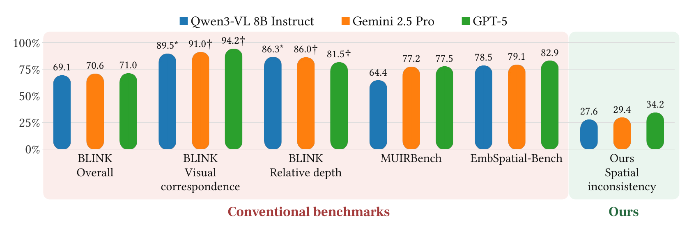
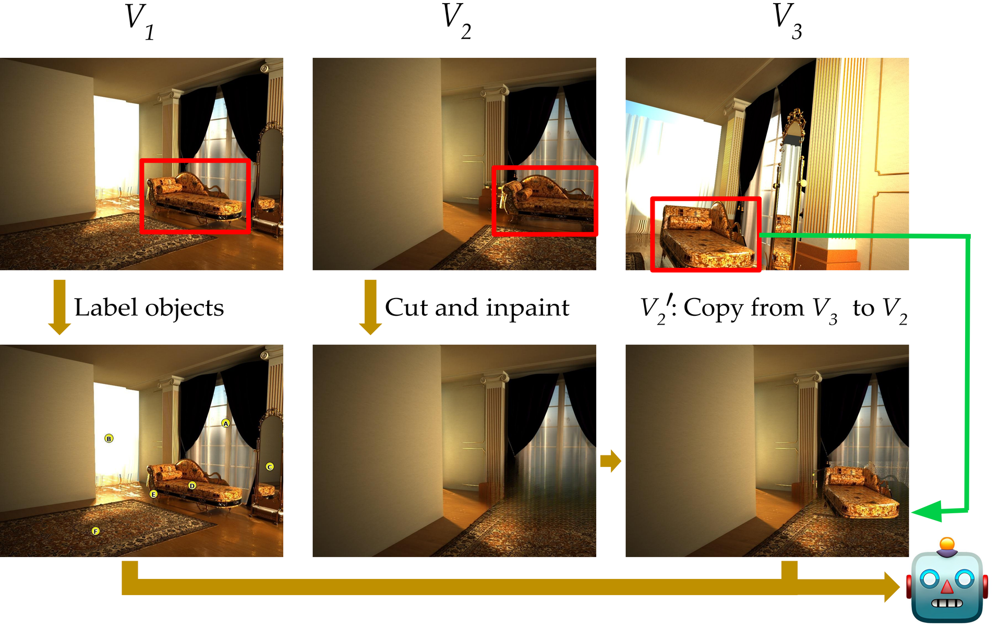
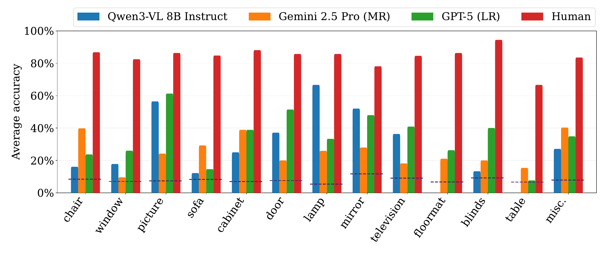

Spatial Description vs. Spatial Inconsistency
Conventional benchmarks ask models to describe a scene
Most benchmarks ask multimodal LLMs to describe a scene’s spatial attributes, such as whether a staircase is left or right of a window. Many SOTA models score very well, which can create the appearance of grounded spatial understanding.
We hypothesize that semantic priors and local visual cues can support plausible descriptions without a spatially coherent scene representation. We therefore propose a counterfactual test to probe this understanding.
We test spatial understanding with a simple counterfactual test
We introduce an inconsistency into a multiview scene and ask the model to identify which object violates its 3D structure. We hypothesize this requires it to reason about what is and isn’t spatially coherent.
Models perform well when asked to describe spatial attributes, but fail at our Spatial Inconsistencies

Notice that many of the SOTA models do very well at the standard scene description tasks but fail at ours. We hypothesize this is because they have a very brittle understanding of spatial rules, so when we present them with a scene that doesn’t make sense, they don’t know how to handle this and thus fail.
We hope our findings encourage future work to explore counterfactual spatial reasoning tasks as a tool to help uncover the next generation of models’ weaknesses in spatial reasoning.
Accuracy (%). * Local runs. † Cai et al., CVPR 2026. Other prior scores: Bai et al. (2025a), Qwen3-VL technical report. Ours: Gemini (MR), GPT-5 (LR). Prior scores use reported settings. Tasks and chance levels differ across benchmarks.
Method
We propose a simple cut-and-paste method to generate spatial inconsistencies. We first select a relatively large object in V1. Then, we cut it out and inpaint the area in V2. Finally, in that region, we paste in the same object from V3. Since V3’s pose is different from V2, the change in object pose doesn’t match the camera motion and results in a spatial inconsistency.

Models do far worse than humans and are very inconsistent across categories
All models do substantially worse than humans, and by a large margin too. This suggests that even if these models can describe spatial attributes of scenes, they lack grounded spatial understanding.
| Model | Accuracy (%) |
|---|---|
| Gemma 3 12B | 8.5 |
| Idefics3 8B | 8.9 |
| Idefics2 8B | 11.9 |
| Qwen2.5-VL 7B | 15.9 |
| InternVL 3.5 8B | 16.1 |
| LLaVA OneVision 1.5 8B | 16.6 |
| SpaceQwen2.5-VL 3B | 18.2 |
| Llama 3.2 Multimodal 11B | 23.4 |
| Qwen3-VL 4B | 24.7 |
| Qwen3-VL 8B Thinking | 25.2 |
| Qwen3-VL 8B Instruct | 27.6 |
| Ensemble (open source) | 30.1 |
| Model | Accuracy (%) |
|---|---|
| Random chance | 7.9 |
| Human | 84.8 |
| GPT-5 Nano | 15.3 |
| Gemini 2.5 Flash | 17.6 |
| GPT-4o | 19.0 |
| Gemini 2.5 Pro (HR) | 28.9 |
| Gemini 2.5 Pro (LR) | 29.4 |
| Gemini 2.5 Pro (MR) | 29.4 |
| GPT-5 (HR) | 30.2 |
| GPT-5 (MR) | 31.4 |
| GPT-5 (LR) | 34.2 |
| Ensemble (all models) | 35.0 |
Overall accuracy on spatial inconsistency identification. LR, MR, and HR denote low, medium, and high reasoning budgets.
In addition, model accuracy varies greatly across object types (Qwen gets 66.7% of lamps, but 0% of floormats), while humans are very consistent. This suggests these models have a very brittle understanding of spatial consistency.

Models don’t cheat
We empirically find that artifacts from cut-and-paste do not confound our results.
| Model | Benchmark | Self-paste | No change |
|---|---|---|---|
| GPT-5 | 34.2 | 15.1 | 13.7 |
| Gemini 2.5 Pro | 29.4 | 13.8 | 15.3 |
| Qwen3-VL 8B | 27.6 | 21.3 | 22.0 |
Notably, models select a cut-and-pasted object with a different pose (benchmark) far more than if we cut-and-paste the same pose. This suggests models look for 3D structure and not artifacts.
More reasoning doesn’t help
| Model | Low | Medium | High |
|---|---|---|---|
| GPT-5 | 34.2 | 31.4 | 30.2 |
| Gemini 2.5 Pro | 29.4 | 29.4 | 28.9 |
Increasing the reasoning budget does not improve spatial reasoning. This is counterintuitive and suggests that models’ reasoning abilities do not represent spatial information well.